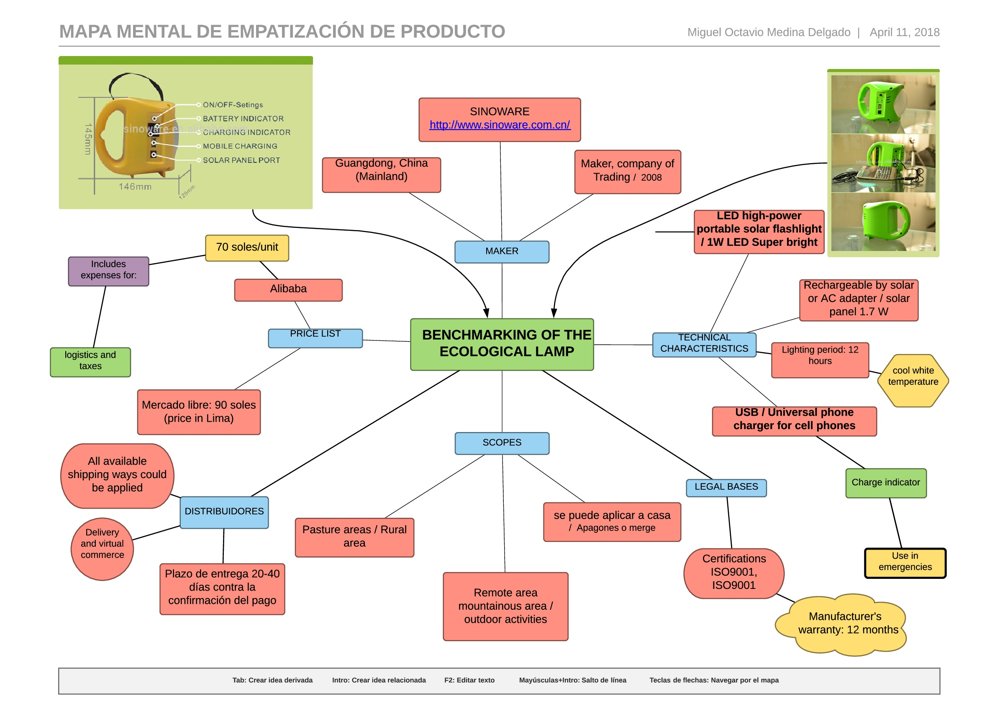

Idioma: Español
In this second part of the Design Thinking methodology we will cover the second objective:
Develop empathy with users, by observing them. Therefore, it is a methodology based on observing the user.
1. BENCHMARKING DE LA LÁMPARA ECOLÓGICA (SOLAR)
Lista de precios
Free market: 90 soles / unit (price in Lima, distributed to provinces has a surcharge of 15 to 20 soles more
Alibaba: 70 soles / unit (with logistics and taxes)
MAKER
MAIN PAGE SINOWARE.• Place of origin: Guangdong, China (Mainland)
• Business Type: Manufacturer, Trading Company
• Main Products: Solar lantern, solar lighting system, solar light, solar light at home, solar lamp
• Total Annual Revenue: US$5 Million - US$10 Million
• Markets: Southeast Asia 40.00% Africa 20.00% Domestic market 10.00%
• Total employees: 51 - 100 people
• Year of establishment: 2008 (verified)
ABOUT THEM
SINOWARE TECHNOLOGY Co., Limited: is one of the leading manufacturers of solar products. Its main products include:
• Solar lantern
• Solar lighting system (DC).
• Solar energy systems (~ 2000 W of 5 W).
These solar products have been exported to some 30 countries and areas around the world such as Angola, South Africa, Chile, Indonesia, Denmark, etc. And its products also have ISO9001, CE and RoHS certifications. And they have cooperated with the United Nations for a project that made 200,000 sets of solar systems for homes in a month.
If you ask them, what is the most important lamp in the world?
The serious answer: Children ...
In a marginalized population, innocent children are without education, without happiness and without hope. However, Sinoware brought you new Lights and love. After that, SOL SMILE is always around the children. They see hope for everything and know how to give love to their neighbor.
SINOWARE SOLAR LAMP BRINGS BRIGHTNESS, WARMTH AND HOPE!SINOWARE-LOVE IS EVERYWHERE!
Technical characteristics
Portable high flow LED solar led flashlight with USB phone charger;Super bright LED light and longer working time;
• Portable high-flow solar LED flashlight with USB phone charger
• Portable high solar flow led camping flashlight with USB phone charger;Super bright LED flashlight and longer working time;
• Ideal for indoor and outdoor use, such as camping, fishing, emergency, etc.
1. Rechargeable by solar or AC adapter;
2. Solar panel material: Polycrystalline; Cover material: ABS;
3. Four adjustable brightness settings;
4. Battery type: 2.6Ah / 3.7V lithium battery;
5. Mobile phone charging function with 3 standard charging connectors for Nokia6101, Sony Ericsson K750 and mini USB;
6. with battery capacity Indicator;
7. Optional color: yellow, green, blue, gray, black, orange;
8. With overcharge and overdischarge protection;
9. CE and RoHS compliant;
MENTAL MAP OF PRODUCT EMPLOYMENT
